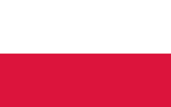
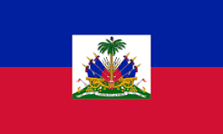
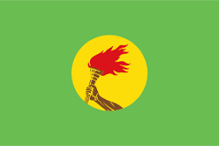
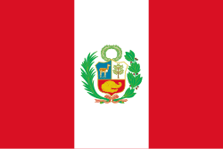

¿De qué se trató el Mundial de 1974?
La Copa Mundial de la FIFA 1974 fue la décima edición del torneo y se disputó en Alemania Federal (RFA) entre el 13 de junio y el 7 de julio de 1974. Representó el regreso de la máxima cita futbolística a suelo europeo tras ocho años, consolidándose como un evento marcado por una fuerte tensión política, extremas medidas de seguridad y revoluciones tácticas que redefinieron el juego.
El campeonato estuvo marcado por hitos institucionales de gran relevancia. Al haberse entregado de manera definitiva la Copa Jules Rimet a Brasil en la edición anterior, en este torneo se estrenó el trofeo actual: la Copa Mundial de la FIFA, diseñada por el escultor italiano Silvio Gazzaniga. A nivel deportivo, el certamen asombró al planeta con la irrupción del "Fútbol Total" desplegado por la selección de los Países Bajos (Holanda).
Alemania Federal organizó un torneo impecable bajo un clima de rigurosa vigilancia debido a la latente amenaza terrorista de la época. A pesar del favoritismo de la "Naranja Mecánica" de Johan Cruyff, fue el combinado anfitrión el que demostró mayor contundencia y oficio, consiguiendo así su segundo título mundial.
Informacion que tenes que saber
Info general
- Pais Anfitrion: Alemania Federal (RFA)
- Fecha de Inicio:
13 de Junio de 1974
(13/06/1974) - Fecha de Finalizacion:
7 de Julio de 1974
(07/07/1974) - Duracion: 24 dias
- Organizador: FIFA
- Edicion: X
Estadisticas
- Partidos jugados: 38
- Goles anotados: 97
- Promedio de gol: 2,55
- Máximo goleador:
Grzegorz Lato
(7 goles) - Final:
Alemania Federal 2 - 1 Países Bajos
info de la Ciudad
- Ciudad Sede Principal: Múnich
- Selecciones Participantes: 16
- Estadios Utilizados: 9
- Estadio Principal:
Estadio Olímpico de Múnich
Podio
| Posicion | Seleccion | Bandera |
|---|---|---|
| 1º Puesto | Alemania Federal |  |
| 2º Puesto | Países Bajos |  |
| 3º Puesto | Polonia |  |
| 4º Puesto | Brasil |  |
(Nota: El partido por el tercer puesto se disputó el 6 de julio de 1974 entre Polonia y Brasil, con victoria polaca por 1-0 gracias a un gol de Grzegorz Lato).
Historia completa de la Copa Mundial de la FIFA 1974
La Copa Mundial de la FIFA de 1974 fue la décima edición del torneo y se disputó en Alemania Federal entre el 13 de junio y el 7 de julio de 1974. La FIFA otorgó la sede a Alemania Federal en su congreso de 1966 en Londres. El torneo se desarrolló bajo un fortísimo e inédito operativo de seguridad militarizado, debido al traumático antecedente del atentado terrorista ocurrido en los Juegos Olímpicos de Múnich 1972.
La fase de clasificación dejó fuera a gigantes continentales como Inglaterra, España, Francia, la URSS y al vigente subcampeón, Italia. En contraste, el torneo albergó los debuts absolutos de Alemania Democrática (RDA), Australia, Haití y Zaire, el primer equipo de la África subsahariana en clasificar para una Copa del Mundo.
Desarrollo del torneo
Los partidos se disputaron en 9 ciudades distintas de Alemania Federal. El formato fue revolucionario: se eliminaron los cuartos de final y semifinales directas, reemplazándolos por una doble fase de grupos. Las 16 selecciones se dividieron en 4 grupos iniciales, y los 8 clasificados formaron dos nuevos grupos finales cuyos ganadores disputaron la gran final.
La fase de grupos dejó un enfrentamiento histórico: Alemania Federal frente a Alemania Democrática. En un partido cargado de tensión ideológica en Hamburgo, la RDA dio la gran sorpresa al derrotar a la RFA por 1-0 con un gol de Jürgen Sparwasser. Mientras tanto, los Países Bajos maravillaron al mundo con su "Fútbol Total", despachando con autoridad a Argentina (4-0) y Brasil (2-0) en la segunda fase de grupos.
La gran final
La final se jugó el 7 de julio de 1974 en el Estadio Olímpico de Múnich ante unos 75.000 espectadores. El partido comenzó de forma impactante: antes de que un solo jugador alemán tocara el balón, Johan Cruyff fabricó una sensacional jugada que derivó en un penal, convertido por Johan Neeskens en el primer minuto. Sin embargo, Alemania igualó por la misma vía gracias a Paul Breitner, y poco antes del descanso Gerd Müller anotó el 2-1 definitivo. En el segundo tiempo, la contención defensiva comandada por Beckenbauer neutralizó a la "Naranja Mecánica", sellando el título de la RFA.
Alemania Federal consiguió así su segundo título mundial, convirtiéndose en la primera selección en alzar el nuevo trofeo de la FIFA diseñado por Silvio Gazzaniga. El máximo goleador del torneo fue el polaco Grzegorz Lato con siete tantos, mientras que Franz Beckenbauer lideró al equipo campeón como capitán y figura indiscutida.
⚽ Pelota Oficial del Mundial 1974

ADIDAS TELSTAR DURLAST
La Adidas Telstar Durlast fue la pelota oficial utilizada durante la Copa Mundial de la FIFA Alemania 1974. Era una versión mejorada del diseño clásico de 32 paneles poligonales en blanco y negro, con un revestimiento especial de poliuretano para impermeabilizar el cuero ante la persistente lluvia alemana.
Información General
Nombre: Adidas Telstar Durlast
Fabricante: Adidas
Material: Cuero natural con revestimiento de poliuretano
Color: Blanco y negro (32 paneles)
Sistema de cierre: Sin cordones
Torneo: Copa Mundial FIFA Alemania Federal 1974
Características
- Diseño icónico de 32 paneles en blanco y negro.
- Revestimiento de poliuretano para mayor impermeabilidad.
- Adidas se consolidó como proveedor exclusivo de la FIFA.
- Se utilizó también el modelo Adidas Chile en ciertos partidos.
- Fue la primera pelota en destacarse tanto visualmente en televisión a color.
Dato curioso
En paralelo a la Telstar Durlast, para ciertos partidos se empleó el modelo Adidas Chile, un balón completamente blanco que recordaba a los mundiales antiguos pero con tecnología moderna de 32 paneles. El diseño en blanco y negro de la Telstar fue pensado especialmente para mejorar la visibilidad del balón en las transmisiones de televisión a color, que ese año alcanzaron su máximo nivel de cobertura global.
Selecciones Participantes
Europa
Alemania Federal (Anfitrión) Alemania Democrática
Alemania Democrática Bulgaria
Bulgaria Escocia
Escocia Italia Países Bajos
Italia Países Bajos Suecia
Suecia Yugoslavia
YugoslaviaSudamérica
 Argentina Brasil (Vigente campeón)
Argentina Brasil (Vigente campeón) Chile
Chile Uruguay
UruguayNorteamérica y Caribe

HaitíOceanía
 Australia
AustraliaÁfrica

Zaire
Sedes |
||||
|---|---|---|---|---|
|
El Mundial de 1974 se disputó en nueve ciudades de Alemania Federal, con el Estadio Olímpico de Múnich como principal escenario. Cada estadio fue sometido a estrictas medidas de seguridad debido al traumático antecedente del atentado terrorista en los Juegos Olímpicos de 1972, celebrados en la misma ciudad. La organización alemana fue considerada impecable, con estadios de última generación y excelente infraestructura. La diversidad geográfica de las sedes permitió que el torneo tuviese una cobertura amplia en todo el territorio de la República Federal Alemana, con estadios de gran capacidad y modernos para la época. El Estadio Olímpico de Múnich fue el escenario de la gran final entre Alemania Federal y los Países Bajos, así como de otros encuentros decisivos. Había sido construido apenas dos años antes para los Juegos Olímpicos de 1972. |
||||
| Nombre del Estadio | Ciudad | Descripción | Capacidad aprox. | Partidos Jugados |
Estadio Olímpico de Múnich |
Múnich | Fue el estadio principal del Mundial y sede de la gran final entre Alemania Federal y los Países Bajos. Construido para los Juegos Olímpicos de 1972, contaba con una arquitectura revolucionaria con su icónica cubierta tensada. Allí se celebró la ceremonia de apertura y los partidos más importantes del torneo. Fue también el escenario más cargado de historia por los trágicos eventos de 1972. | 75.000 | 5 |
Estadio Olímpico de Berlín |
Berlín Occidental | El estadio más grande del torneo en capacidad. Construido originalmente para los Juegos Olímpicos de 1936, fue una de las sedes históricas del fútbol alemán. Su presencia en el torneo tuvo una carga simbólica adicional al estar en la ciudad dividida por el Muro de Berlín, símbolo de la Guerra Fría que marcó la época. | 86.000 | 3 |
Volksparkstadion |
Hamburgo | Sede del histórico partido entre las dos Alemanias, donde la RDA sorprendió al mundo derrotando a la RFA por 1-0 con un gol de Jürgen Sparwasser. Fue uno de los encuentros más cargados políticamente en la historia de los Mundiales, al enfrentar a dos naciones surgidas de la misma tierra pero divididas por la Guerra Fría. | 62.000 | 3 |
Westfalenstadion |
Dortmund | Uno de los estadios más modernos del torneo, inaugurado en 1974, el mismo año del Mundial. Su estreno oficial fue precisamente durante la Copa del Mundo, lo que lo convirtió en un símbolo de la renovación del fútbol alemán en esa época. Es hoy uno de los estadios más emblemáticos de la Bundesliga. | 54.000 | 4 |
Rheinstadion |
Düsseldorf | Ubicado a orillas del Rin, fue una de las sedes con mayor capacidad del torneo. Albergó importantes partidos de la primera y segunda fase de grupos. Su infraestructura moderna y accesibilidad la convirtieron en una de las sedes mejor valoradas por delegaciones y aficionados durante el campeonato. | 67.000 | 5 |
Parkstadion |
Gelsenkirchen | Sede de cinco partidos del torneo, entre ellos encuentros de la segunda fase de grupos. Gelsenkirchen, ciudad del corazón industrial del Ruhr, brindó un ambiente apasionado y obrero que caracterizó el espíritu futbolero de la región. Es conocida actualmente como la sede del Schalke 04. | 70.000 | 5 |
Waldstadion |
Fráncfort | El "Estadio del Bosque" fue una de las sedes más características del torneo por su entorno natural. Albergó cinco partidos del Mundial, incluyendo encuentros de alta competencia en la segunda fase de grupos. Hoy conocido como Deutsche Bank Park, sigue siendo uno de los recintos más queridos del fútbol alemán. | 62.000 | 5 |
Niedersachsenstadion |
Hannover | Sede de cuatro partidos de la primera fase de grupos. Hannover aportó una de las atmósferas más cálidas del torneo, con aficionados muy entregados. El estadio fue posteriormente renovado y hoy es conocido como el HDI-Arena, hogar del Hannover 96 en la Bundesliga. | 60.000 | 4 |
Neckarstadion |
Stuttgart | Una de las sedes con mayor capacidad del torneo, albergó cuatro partidos del certamen. Ubicado a orillas del río Neckar, fue testigo de varios encuentros memorables de la primera fase de grupos. Hoy conocido como Mercedes-Benz Arena, sigue siendo el estadio del VfB Stuttgart. | 72.000 | 4 |
Arbitros de la Copa Mundial de la FIFA 1974 por pais
| Arbitros | Pais |
|---|---|
| Tony Boskovic | |
| Erich Linemayr |  |
| Vital Loraux |  |
| Omar Delgado |  |
| Alfonso González Archundia |  |
| Kurt Tschenscher | |
| Jack Taylor |  |
| Robert Davidson | |
| Aurelio Angonese | |
| Ramón Barreto | |
| Abraham Klein |  |
| Moustafa Kamel |  |
| Rudi Glöckner | |
| Nicolae Rainea |  |
| Gunnar Karlsson | |
| Pavel Kazakov |  |
| Luis Pestarino | |
| Edison Pérez |  |
| Alfonso Segura |  |
Resumen del torneo — Copa Mundial de la FIFA 1974
Primera Fase de Grupos
Grupo 1
- Alemania Federal (6)
- Alemania Democrática (4)
- Chile (2)
- Australia (0)
Alemania Federal
1:0 (1:0)
Chile
Carlos Caszely (Chile) recibió la primera tarjeta roja directa en la historia de los Mundiales.
Alemania Democrática
2:0 (1:0)
Australia
Alemania Federal
3:0 (2:0)
Australia
Alemania Democrática
1:1 (0:1)
Chile
Alemania Democrática
1:0 (1:0)
Alemania Federal
Gol histórico de Jürgen Sparwasser que dio la victoria a la RDA sobre la RFA. Fue el único enfrentamiento entre las dos Alemanias en la historia de los Mundiales.
Australia
0:0
Chile
| Seleccion | Pts. | PJ | PG | PE | PP | GF | GC | Dif. |
|---|---|---|---|---|---|---|---|---|
| Alemania Federal |
4 | 3 | 2 | 0 | 1 | 4 | 1 | 3 |
| Alemania Democrática |
4 | 3 | 2 | 1 | 0 | 4 | 1 | 3 |
| Chile |
2 | 3 | 0 | 2 | 1 | 1 | 2 | -1 |
| Australia |
1 | 3 | 0 | 1 | 2 | 0 | 5 | -5 |
Grupo 2
- Yugoslavia (4)
- Brasil (4)
- Escocia (4)
- Zaire (0)
Brasil
0:0
Yugoslavia
Yugoslavia
9:0 (6:0)
Zaire
Brasil
0:0
Escocia
Yugoslavia
1:1 (1:0)
Escocia
Brasil
3:0 (2:0)
Zaire
Escocia
1:1 (0:1)
Zaire
Escocia fue eliminada con 4 puntos, la primera selección en la historia de los Mundiales en quedar fuera sin perder un solo partido.
| Seleccion | Pts. | PJ | PG | PE | PP | GF | GC | Dif. |
|---|---|---|---|---|---|---|---|---|
| Yugoslavia |
4 | 3 | 1 | 2 | 0 | 10 | 1 | 9 |
| Brasil |
4 | 3 | 1 | 2 | 0 | 3 | 0 | 3 |
| Escocia |
4 | 3 | 1 | 2 | 0 | 3 | 1 | 2 |
| Zaire | 0 | 3 | 0 | 0 | 3 | 0 | 14 | -14 |
Grupo 3
- Países Bajos (6)
- Suecia (4)
- Bulgaria (1)
- Uruguay (1)
Países Bajos
2:0 (1:0)
Uruguay
Suecia
0:0
Bulgaria
Países Bajos
0:0
Suecia
Bulgaria
1:1 (1:0)
Uruguay
Países Bajos
4:1 (1:1)
Bulgaria
Suecia
3:0 (2:0)
Uruguay
| Seleccion | Pts. | PJ | PG | PE | PP | GF | GC | Dif. |
|---|---|---|---|---|---|---|---|---|
| Países Bajos |
5 | 3 | 2 | 1 | 0 | 6 | 1 | 5 |
| Suecia |
4 | 3 | 1 | 2 | 0 | 3 | 0 | 3 |
| Bulgaria |
1 | 3 | 0 | 1 | 2 | 2 | 5 | -3 |
| Uruguay |
1 | 3 | 0 | 1 | 2 | 1 | 6 | -5 |
Grupo 4
- Polonia (6)
- Argentina (4)
- Italia (2)
- Haití (0)
Italia
3:1 (1:1)
Haití
Ernst Jean-Joseph (Haití) dio positivo por efedrina tras este partido, convirtiéndose en el primer caso de dopaje positivo en la historia de los Mundiales.
Argentina
Argentina
4:1 (2:1)
Haití
Argentina
1:1 (0:1)
Italia
Italia
| Seleccion | Pts. | PJ | PG | PE | PP | GF | GC | Dif. |
|---|---|---|---|---|---|---|---|---|
| Polonia | 6 | 3 | 3 | 0 | 0 | 12 | 3 | 9 |
| Argentina |
3 | 3 | 1 | 1 | 1 | 7 | 6 | 1 |
| Italia |
2 | 3 | 1 | 1 | 1 | 5 | 4 | 1 |
| Haití | 0 | 3 | 0 | 0 | 3 | 2 | 14 | -12 |
Segunda Fase de Grupos
Los 8 clasificados se reorganizaron en dos nuevos grupos de 4 equipos. Los ganadores de cada grupo disputaron la final; los segundos jugaron el partido por el tercer puesto.
Grupo A
- Países Bajos (6)
- Brasil (4)
- Alemania Democrática (1)
- Argentina (0)
Países Bajos
4:0 (2:0)
Argentina
Brasil
1:0 (1:0)
Alemania Democrática
Países Bajos
2:0 (2:0)
Alemania Democrática
Brasil
2:1 (0:1)
Argentina
Países Bajos
2:0 (0:0)
Brasil
Argentina
1:1 (0:1)
Alemania Democrática
| Seleccion | Pts. | PJ | PG | PE | PP | GF | GC | Dif. |
|---|---|---|---|---|---|---|---|---|
| Países Bajos |
6 | 3 | 3 | 0 | 0 | 8 | 0 | 8 |
| Brasil |
4 | 3 | 2 | 0 | 1 | 3 | 3 | 0 |
| Alemania Democrática |
1 | 3 | 0 | 1 | 2 | 1 | 4 | -3 |
| Argentina |
1 | 3 | 0 | 1 | 2 | 2 | 7 | -5 |
Grupo B
- Alemania Federal (6)
- Polonia (4)
- Suecia (2)
- Yugoslavia (0)
Alemania Federal
2:0 (1:0)
Yugoslavia
Suecia
Alemania Federal
4:2 (2:1)
Suecia
Yugoslavia
Alemania Federal
1:0 (1:0)
Polonia
Gerd Müller anotó el único gol del partido, el que clasificó a Alemania a la final.
Suecia
2:1 (0:1)
Yugoslavia
| Seleccion | Pts. | PJ | PG | PE | PP | GF | GC | Dif. |
|---|---|---|---|---|---|---|---|---|
| Alemania Federal |
6 | 3 | 3 | 0 | 0 | 7 | 2 | 5 |
| Polonia | 4 | 3 | 2 | 0 | 1 | 3 | 2 | 1 |
| Suecia |
2 | 3 | 1 | 0 | 2 | 4 | 6 | -2 |
| Yugoslavia |
0 | 3 | 0 | 0 | 3 | 2 | 6 | -4 |
Tercer puesto y Final
Tercer Puesto
Brasil 0Final
Alemania Federal 2 Países Bajos 1Máximos goleadores — Copa Mundial de la FIFA 1974
| Jugador | Goles | Pais |
|---|---|---|
| Grzegorz Lato | 7 | |
| Andrzej Szarmach | 5 | |
| Johan Neeskens | 5 | |
| Gerd Müller | 4 | |
| Johnny Rep | 4 | |
| Ralf Edström | 4 | |
| Dušan Bajević | 3 | |
Equipo estelar — Copa Mundial de la FIFA 1974
Elegido por los medios internacionales al finalizar el torneo, el equipo ideal de 1974 combinó lo mejor de los campeones alemanes con las figuras de la "Naranja Mecánica" holandesa y la revelación polaca.
| Posición | Jugador | Pais |
|---|---|---|
| Portero | Sepp Maier | |
| Defensa | Berti Vogts | |
| Defensa | Ruud Krol | |
| Defensa | Franz Beckenbauer | |
| Defensa | Paul Breitner | |
| Mediocampista | Kazimierz Deyna | |
| Mediocampista | Johan Neeskens | |
| Mediocampista | Wolfgang Overath | |
| Delantero | Grzegorz Lato | |
| Delantero | Johan Cruyff | |
| Delantero | Rob Rensenbrink | |
Controversias de la Copa Mundial de la FIFA 1974
La fuerte politización global de los años 70 se trasladó por completo al torneo, generando incidentes muy recordados que trascendieron lo meramente deportivo.
-
La derrota táctica de Alemania Federal ante la RDA
El duelo entre las dos Alemanias estuvo rodeado de sospechas. Tras la victoria de la Alemania Oriental (RDA), surgieron especulaciones de que la RFA no se empleó a fondo en los minutos finales para quedar segunda en su grupo de manera intencional, evitando así cruzarse en la segunda fase con la temible Holanda y el siempre peligroso Brasil.
-
Las amenazas a la selección de Zaire
Tras ser goleados 9-0 por Yugoslavia, se reveló que los jugadores de Zaire no habían recibido los pagos prometidos por su federación. El dictador Mobutu Sese Seko envió guardaespaldas para amenazar al plantel si perdían ante Brasil por más de tres goles. Esto propició la insólita jugada donde el defensor Mwepu Ilunga salió corriendo de la barrera para patear el balón antes de que un jugador brasileño cobrara un tiro libre.
-
El primer caso de dopaje en un Mundial: Haití
El jugador haitiano Ernst Jean-Joseph dio positivo por efedrina tras el encuentro ante Italia, convirtiéndose en el primer caso de dopaje positivo en la historia de los Mundiales. El futbolista fue retirado a la fuerza de la concentración por agentes de su propio país y, según informes posteriores, sufrió severos castigos físicos a su regreso bajo el régimen dictatorial de Jean-Claude Duvalier.
-
El escándalo de la noche previa a la final (Países Bajos)
El diario alemán Bild publicó una escandalosa crónica donde aseguraba que varios jugadores de la "Naranja Mecánica", incluyendo a Johan Cruyff, habían pasado la noche previa en una fiesta nudista en la piscina del hotel con mujeres alemanas. Se dice que Cruyff pasó gran parte de la noche discutiendo por teléfono con su esposa para desmentir la noticia, afectando visiblemente el rendimiento psicológico del equipo.
-
La primera tarjeta roja directa de la historia mundialista
El chileno Carlos Caszely recibió la primera expulsión mediante tarjeta roja directa en la historia de los Mundiales durante el partido entre Chile y Alemania Federal. El cuerpo arbitral del torneo aplicó de forma estricta el reglamento de tarjetas, implementado apenas dos años antes por la FIFA, convirtiendo a Caszely en un hito involuntario de la historia del fútbol.
Tabla de Rendimiento y Posiciones Finales
| Posicion | Seleccion | Pts | PJ | PG | PE | PP | GF | GC | Dif | Rendimiento |
|---|---|---|---|---|---|---|---|---|---|---|
| 1 | Alemania Federal |
12 | 7 | 6 | 0 | 1 | 13 | 4 | +9 | 85,7% |
| 2 | Países Bajos |
11 | 7 | 5 | 1 | 1 | 15 | 3 | +12 | 78,6% |
| 3 | Polonia | 12 | 7 | 6 | 0 | 1 | 16 | 5 | +11 | 85,7% |
| 4 | Brasil |
8 | 7 | 3 | 2 | 2 | 6 | 4 | +2 | 57,1% |
| 5 | Suecia |
6 | 6 | 2 | 2 | 2 | 7 | 6 | +1 | 50,0% |
| 6 | Alemania Democrática |
6 | 6 | 2 | 2 | 2 | 5 | 5 | 0 | 50,0% |
| 7 | Yugoslavia |
4 | 6 | 1 | 2 | 3 | 12 | 7 | +5 | 41,7% |
| 8 | Argentina |
4 | 6 | 1 | 2 | 3 | 9 | 12 | -3 | 41,7% |
| 9 | Escocia |
4 | 3 | 1 | 2 | 0 | 3 | 1 | +2 | 66,7% |
| 10 | Italia |
3 | 3 | 1 | 1 | 1 | 5 | 4 | +1 | 50,0% |
| 11 | Chile |
2 | 3 | 0 | 2 | 1 | 1 | 2 | -1 | 33,3% |
| 12 | Bulgaria |
2 | 3 | 0 | 2 | 1 | 2 | 5 | -3 | 33,3% |
| 13 | Uruguay |
1 | 3 | 0 | 1 | 2 | 1 | 6 | -5 | 16,6% |
| 14 | Australia |
1 | 3 | 0 | 1 | 2 | 0 | 5 | -5 | 16,6% |
| 15 | Haití | 0 | 3 | 0 | 0 | 3 | 2 | 14 | -12 | 0,0% |
| 16 | Zaire | 0 | 3 | 0 | 0 | 3 | 0 | 14 | -14 | 0,0% |
- PJ: PARTIDOS JUGADOS
- PG: PARTIDOS GANADOS
- PE: PARTIDOS EMPATADOS
- PP: PARTIDOS PERDIDOS
- GF: GOLES A FAVOR
- GC: GOLES EN CONTRA
- DG: DIFERENCIA DE GOL
- RENDIMIENTO: BASADA EN LA EFECTIVIDAD DE PARTIDOS (PG, PE, PP)